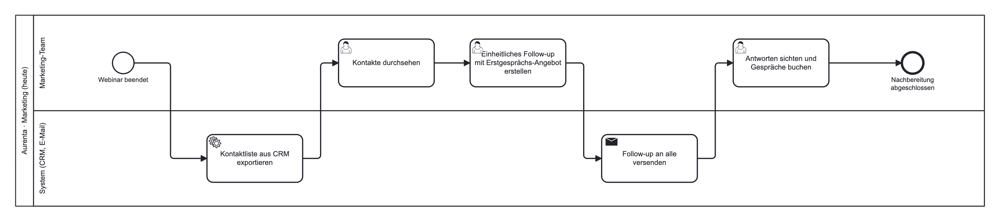
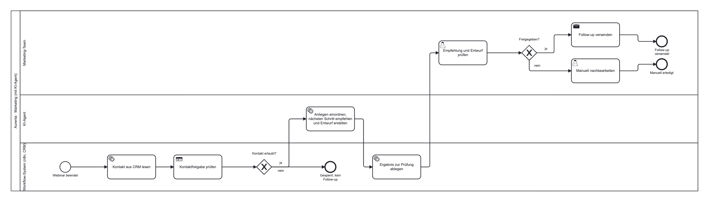

1 BriefingZoi um 10 Uhr: Angebot, Zielgruppe, heutiger Prozess, gewünschter Nutzen
2 Ein Lauf vom MontagK-02: Erwartung, Ergebnis, Ursache
3 Prompt und HypotheseDer erste Prompt, dann eine Hypothese aus den Aurenta-Daten
4 ProjektbriefEngpass, Zielgruppe, Hypothese, erster Ablauf und seine Grenze
5 AblaufskizzeSwimlane-Diagramm: wer macht was, Regel oder Modell oder Mensch
6 Workflows und AgentenWann reicht der feste Ablauf, dann Ausbau und Reviews
Drei Fragen vorbereiten
Drei Rollen während des Briefings
Vorstellung durch Zoi, danach Fragen. Die Rollen wechseln beim anschließenden Bearbeiten.
Ursache 1
Daten
Das Modell hat falsche oder unvollständige Angaben bekommen, zum Beispiel ein leeres Anliegen oder die falsche Kontakt-ID.
Ursache 2
Anweisung
Die Angaben stimmen, aber im Prompt fehlt eine Regel oder sie ist unklar. Beispiel: Der Kontakt will nur Material, der Prompt erlaubt trotzdem eine Gesprächseinladung.
Ursache 3
Modell
Angaben und Prompt stimmen, die Antwort ist trotzdem falsch. Erst dann lohnt ein anderes Modell oder ein zusätzlicher Prüfschritt.
Vorgehen: Erst sagen, welche Entscheidung wir für K-02 erwarten. Dann den Lauf starten und vergleichen. Zum Schluss eine konkrete Änderung festhalten.
Frage 1
Welcher Engpass?
An welcher Stelle im Kundenweg gehen Kontakte verloren, und wem würde eine Verbesserung nützen? Nur, was Zoi gesagt hat, zählt als Fakt.
Frage 2
Welche Hypothese?
Wenn wir X ändern, dann verbessert sich Y, weil Z. Dazu: Welche andere Erklärung wäre möglich, welche Daten gibt es, woran messen wir?
Frage 3
Welcher erste Ablauf?
Was geht in den Workflow hinein, und was kommt heraus? So klein, dass es bis Mittwoch läuft und getestet werden kann.
Frage 4
Wo ist die Grenze?
Was lassen wir bewusst weg? Der erste Prototyp ist ein Ausschnitt, nicht das ganze Semesterprojekt.
Prüfe diesen Projektbrief als kritischer Gesprächspartner.
<Projektbrief hier einfügen.>
Nenne höchstens drei Punkte, an denen Problem, Zielgruppe,
Datenlage oder erwarteter Nutzen noch unklar sind.
Trenne Widersprüche im Text von eigenen Vermutungen.
Schlage für jeden Punkt eine konkrete Klärungsfrage vor.
Erfinde keine Aussagen des Partners und keine verfügbaren Daten.Das Team dokumentiert, welche Rückmeldungen es übernommen oder verworfen hat. Ergebnis: Projektbrief Version 1.

Selbst öffnen: Datei herunterladen, dann demo.bpmn.io öffnen und die Datei hineinziehen.

Selbst öffnen: Datei herunterladen, dann demo.bpmn.io öffnen und die Datei hineinziehen.
Feste Regel: läuft immer gleich, braucht keine KI. KI-Schritt: braucht Sprachverständnis oder muss formulieren. Mensch: entscheidet, gibt frei, versendet. Jeder Kasten in der Skizze bekommt eine dieser drei Arten. KI kommt nur dorthin, wo eine Regel nicht reicht.
Aus der Skizze ergeben sich die drei Testfälle für Mittwoch: ein normaler Fall, ein Fall mit fehlender Information, ein gesperrter Kontakt.
Zurück zur Kursseite: Dienstag · Agentic AI für Growth Marketing | Blocktag 2